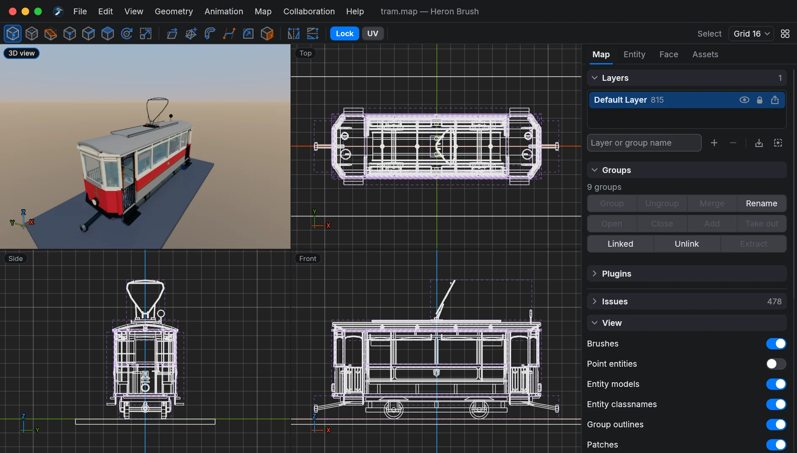
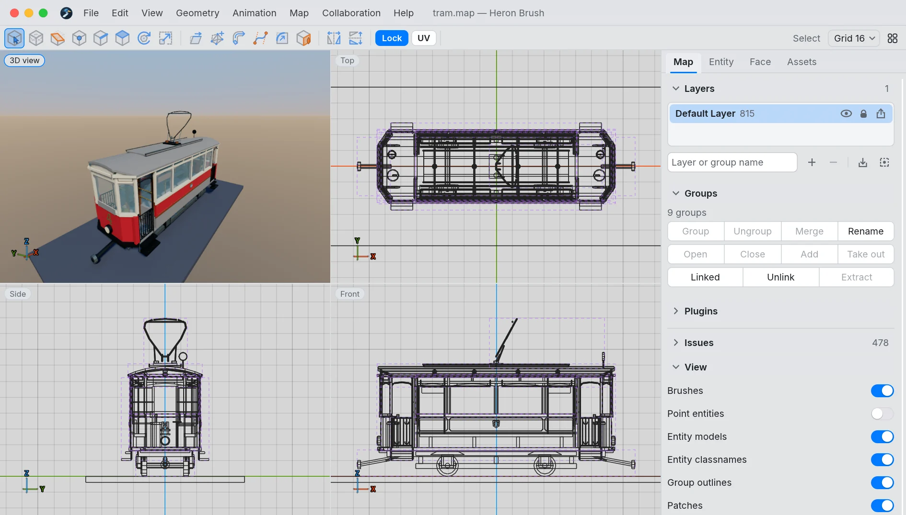
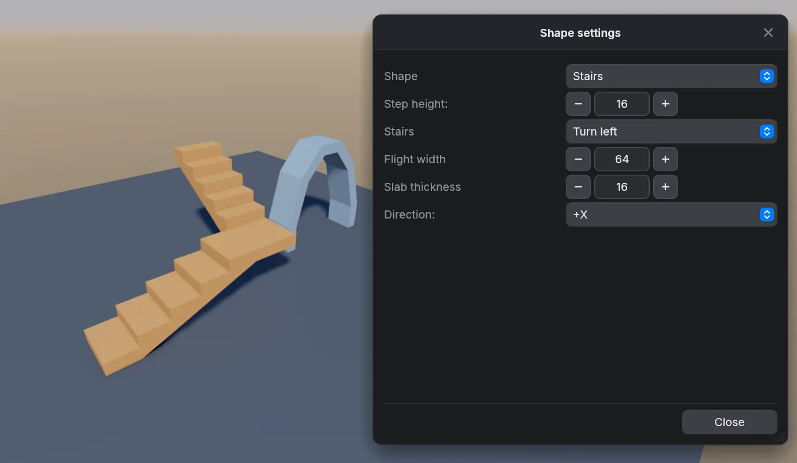
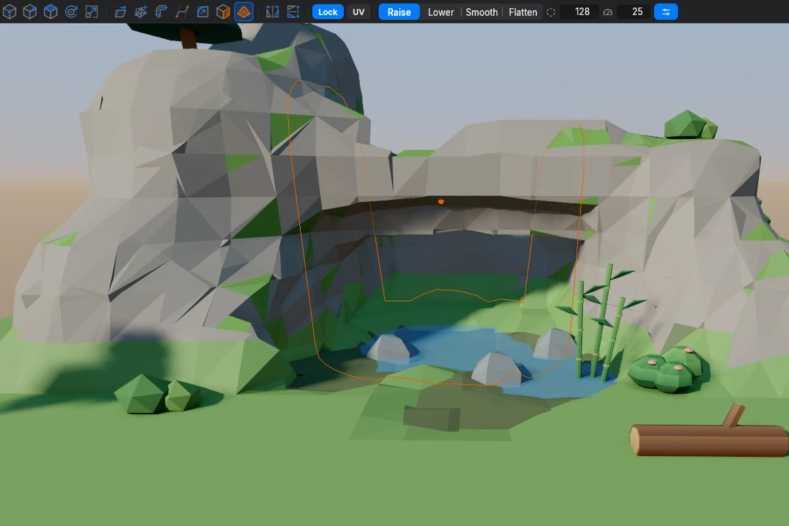
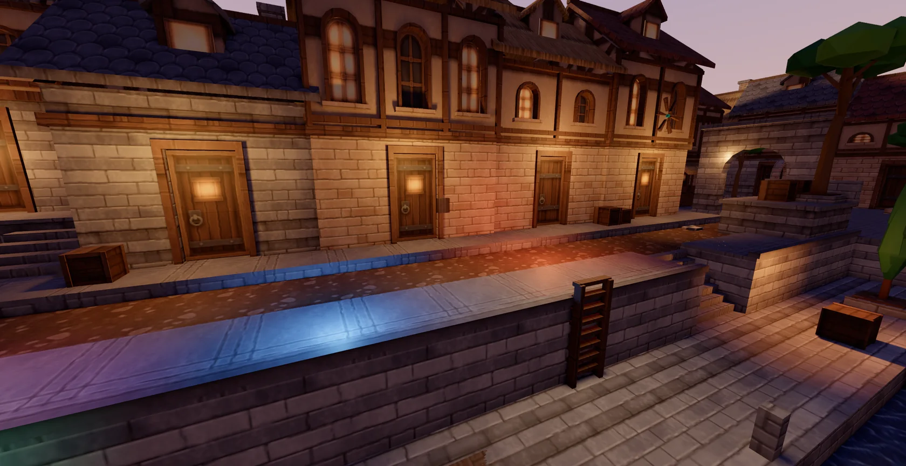
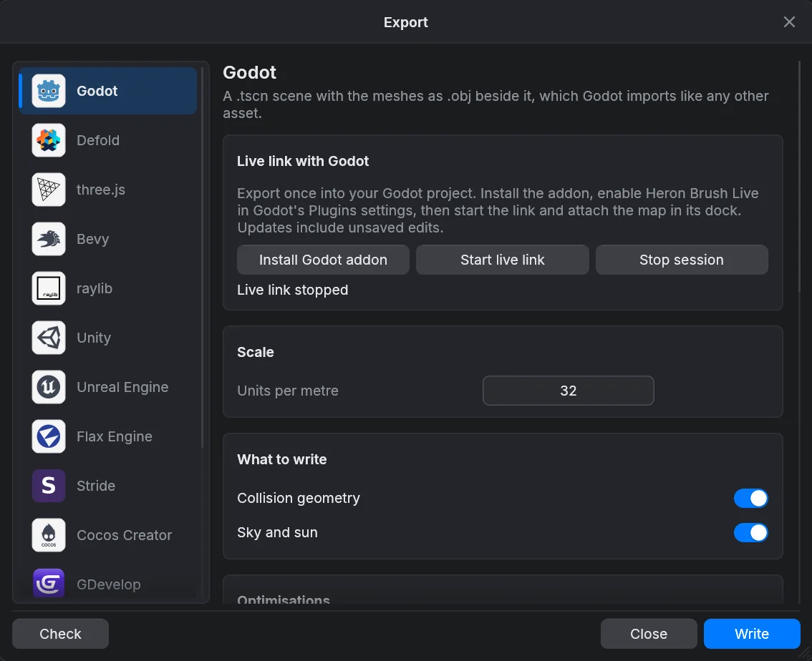

Blog ·
Heron Brush 0.1 is out
Hello! The first public version of Heron Brush is here and you can download it. It is a level editor where you build levels from brushes, like in Quake, and then export them to Godot, Unity, Unreal or other engines. And if you make maps for classic games, it works for them too, because the map is still a normal .map file for the usual Quake and Half-Life compilers.

If you made maps for Quake or Half-Life before, you know how it goes: you draw a block, cut it, move a face, and the level is made from convex solids. I like this way of working a lot, so Heron Brush keeps it, together with the .map file. What I wanted to add is the export, so the geometry, collision, entities, materials and animation can go to a modern engine without extra work.
This is version 0.1, the first release. Below is a short overview what is inside.
Built on TrenchBroom
Heron Brush is a derivative work of TrenchBroom, the editor by Kristian Duske and contributors which many people in the Quake mapping community use. It has the same licence, GPL-3.0.
You can feel it when you use the editor. Many tools work like in TrenchBroom: Shift drags faces, Ctrl and Alt split or slide them, and Alt-click copies a texture from one face to another. So if you know TrenchBroom, you don't have to learn the basics again.


Brushes and shapes
You drag in one of the four views and get a cuboid, stairs (also with landings and turns), an arch, a cylinder, a cone, a sphere or 3D text. Until you confirm the shape, you can still change it in its settings. After that every corner, edge and face has a handle, and there are the usual brush tools: clip, merge, subtract, hollow and intersect.

Fillet and Join corner
Fillet rounds the edges of a brush. Join corner takes two beams that meet in a corner and makes a mitred or a rounded joint from them. In both you see a preview while you set the radius and the number of segments. The rounding is made from normal convex brushes, not a mesh, so the map compiles and exports the same as before.

Sculpting
With the Sculpt tool you paint over the terrain in the 3D view and raise it, lower it, smooth it or make it flat. Freeform works on any brush, not only on terrain. You can drill a hole through a wall, make a column grow from the floor, and bend a branch of it into an arch. When you are done, Join brushes puts the pieces together again into as few brushes as possible.

The 3D view
The 3D view has its own renderer which I wrote for Heron Brush. It has sun shadows, image-based lighting, ambient occlusion, PBR materials, point and spot lights with shadows, reflections, bloom and a procedural sky. It runs on Metal, Vulkan and DirectX 12, and in the browser on WebGPU. A face can have a colour, a gradient or a texture, and textures load from folders, WAD files and PAK, ZIP and PK3 archives.

Export
You can export to Godot, Unity, Unreal Engine, Flax, Defold, Stride, Cocos Creator, GDevelop, Bevy, three.js, raylib, Babylon.js and PlayCanvas, or to glTF, GLB and OBJ. The export takes collision, entities with their properties, keyframe animation, materials, water volumes, the sky and a second UV set for baked light.
For Godot, Unity, Defold and Flax there is also a live link. Your edits go to the open engine editor right away, also before you save. It replaces only the part it generated, so your own nodes and scripts stay as they are.

Working together
More people can open the same map and edit it at the same time. You see the others' cameras and names in the 3D view. An AI agent can also connect through MCP and build geometry, set properties, animate and export with you.
Other things in 0.1
- Game profiles for Quake, Quake 2, Quake 3, Half-Life, Hexen 2 and eight more games. For your own game you load its FGD file.
- Keyframe animation for doors, lifts and props, with a preview in the views.
- Render cameras, they save pictures and GIFs from the map.
- Playtest of the map in a second browser tab, it updates while you edit.
- Compile and run profiles, and leak checks with point and portal files.
- Bézier patches, layers, groups and linked groups, and arrays in a row, grid, ring or random scatter.
- Plugins in a sandboxed scripting language.
- The interface and the offline manual in 30 languages, a Blender keymap, and touch input for Android tablets.
Download
Heron Brush is free and open source, under GPL-3.0. Version 0.1.0 has builds for Windows (x64), macOS (Apple silicon), Linux (x86-64) and Android. If you just want to try it, there is also the browser version (0.1.0b2), no installation needed.
Two small things before you download. The Windows and macOS builds are not signed, so the system will warn you when you open them first time. How to open them anyway is in the release notes on GitHub. On Linux you need glibc 2.39 or newer, so Ubuntu 24.04 or something similarly new.
Download 0.1.0 Release on GitHub Open in browser
Big thanks to Kristian Duske and everybody who worked on TrenchBroom. All credits are in CREDITS.md.
I hope you will enjoy it. Happy mapping!